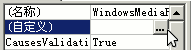

VB程序设计基础
作者：TeliuTe 来源：基础教程网
媒体播放器控件可以播放音乐和视频，下面我们来看一个练习；
1、启动VB
1）双击桌面上的图标，或者点开始菜单，运行VB；
2）在出来的新建窗口中，点“打开”按钮，新建一个标准EXE工程，然后进入主窗口，以 music 为文件名保存文件到自己的文件夹；
3）在属性窗口中设置背景色，把标题改为“播放器”，设定Icon图标选项；
2、使用播放器
1）在工具箱面板空白处点右键，选择“部件”菜单；
2）在出来的对话框中，找到最下面的Windows Media Player，打勾选中，然后点“确定”；

3）把工具箱下边拖宽一些，找到播放器控件，点击选中，在窗体中绘制一个；
4）在右边的属性窗口中，在上边找到自定义，点击进入设置对话框；

5）在出来的设置对话框里，点上边的浏览按钮，选择一个音乐文件，本课的images文件夹中有范例文件；
6）点确定返回，保存一下，运行程序，点播放按钮播放音乐；
播放器范例(在弹出的对话框中点“运行、运行”)
本节学习了，如果你成功地完成了练习，请继续学习；
本教程由86团学校TeliuTe制作|著作权所有
基础教程网：http://teliute.org/
美丽的校园……
转载和引用本站内容，请保留作者和本站链接。